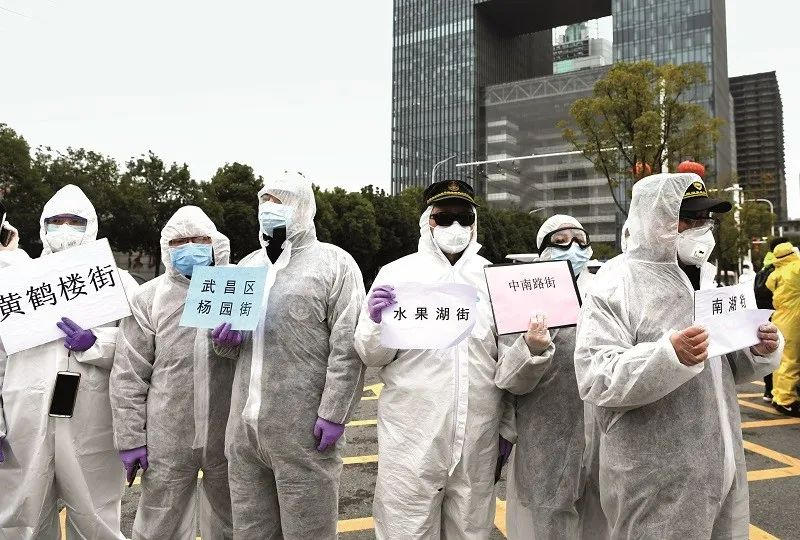

非常时刻的“封”与治
原文链接 备份链接 一整套“战时”防控模式，在武汉这场“保卫战”中迅速成形。 全文7027字，阅读约需14分钟 点击下图进入阅读新京报特别策划 *新京报记者 邓琦 沙雪良 摄影记者 陶冉 郑新洽 编辑 张畅 校对 吴兴发* 叶青站在窗 …

经历整整31天的艰难考验之后，武汉疫情防控已经从无序走向有序，但千万居民的生活从无序到有序才刚刚开始，这个疫情核心区的社会经济生活全面恢复，还面临很多挑战

2020年2月11日，武汉市洪山体育馆武昌方舱医院，社区工作人员前来迎接28名首批患者出院。图/中新
文 | 《财经》特派武汉记者 信娜 刘以秦 王小《财经》记者 辛颖
编辑 | 王小
2020年2月23日早晨，在武汉一家方舱医院的刘静，去找医生询问排队核酸检测名单，“每天每个病区平均有7个检测名额，符合条件先排队，过两天就能检测了，符合标准就能出院。”刘静告诉《财经》记者。
距离武汉“封城”已过去一个月。1月23日10时起，武汉市公共交通暂停运营；无特殊原因，机场、火车站离汉通道暂时关闭，恢复时间另行通告。
刘静没看见自己的名字，但她没有焦虑，安心排队，等待出院，等待去见已分开一个月的两个孩子，等待一切恢复正常。
自进入2月，武汉的街道几无行人，每过两三个街角，便能看到公安执法人员。街道两旁，超市、便利店、水果店大多关闭。只有时不时穿过身边的外卖递送员，才让人感受到些许生活气息。
居住在小区高楼中的人想看看这座城市，只能透过窗户，“大家都无聊地天天趴在玻璃上看，有人下楼遛狗都会被拍照发群里”。一位当地居民对《财经》记者说。
面对传播能力超强的新冠病毒，武汉打的是一场“隔离”战，只有切断病源传播，才能停止疫情扩散。
经过一个月，战场已从医院内隔离扩大到全市，每个社区都被封闭成孤岛。
过去一周是武汉“封城”以来，市民经历过的最严隔离。虽然自2月11日起，武汉实行社区封闭式管理，2月16日为数不多还营业的超市内，早晨还是人头攒动，带着口罩的人们经过体温检测后可从半封闭的通道进入。然而，6天后，各超市已经不允许个人进入采购，只能团购。

武汉一家沃尔玛超市门口。《财经》记者刘以秦 摄
2月17日—19日，武汉开展三天集中拉网清底大排查，以社区为基础，旨在彻底排查各类病人和密切接触者。疫情防控进入关键时刻，为了守住武汉这座城市，全体武汉人都做出了牺牲。
经历整整31天的艰难考验之后，武汉疫情防控已经从无序走向有序，但千万居民的生活从无序到有序才刚刚开始，这个疫情核心区的社会经济生活全面恢复，还面临很多挑战。
“现在是无休止的排队”
1月21日前后，当武汉疫情警报响起的时候，大多数人还沉浸在春节长假一家人团圆喜乐的氛围中。
“封城”前两天，武汉人王琛还在计划春节自驾游，他周围的朋友们也在讨论过年怎么玩，回忆那几天，他觉得好像所有人都在担心武汉，只有武汉人自己没有感觉到。
“‘封城’之前，武汉市政府的表现太正常了，甚至还计划给大家免费派送景点门票。”王琛告诉《财经》记者。
武汉大学的一位教授在1月20日带领十几人的学生团队到社区卫生服务中心进行日常调研，“我是研究公共卫生的，但当时都不清楚疫情的严重程度。”
刘静虽然已经意识到风险，但这天是公公的头七，虽然电话拒绝了所有亲友来家中祭拜，但同一个小区的哥哥和嫂子总是要在一起坐坐。“要不留下来吃个晚饭吧。”刘静对自己的话印象深刻。事后她说，早知道就不吃了，当时有些轻微咳嗽的嫂子，也成为了她唯一接触的病源。
1月22日，湖北启动启动突发公共卫生事件二级应急响应机制。当晚，武汉即将“封城”的消息传出。一位当地警察也是第一时间在网上看到这个消息，很快他接到指令，“不能出武汉。待命。”
此时，除61家开设发热门诊的武汉本地医院，武汉市卫健委在1月22日公布第了二批7家收治新冠肺炎病例的定点医院，并由7家综合医院帮扶，扩容安排3000余张病床收治新冠肺炎疑似和确诊病例。
当大多数人还在议论“封城”信息真假难辨时，出现症状的人群已经超负荷的涌向武汉各医院。医院外聚集着排队挂号的患者，挂不上号的人开始在各家医院奔走。
1月23日零点刚过，武汉一家定点医院的一位医生坐立难安，他打电话给《财经》记者说：“几家定点医院都在武汉市中心区域，无法收治住院的患者在医院间辗转，已经成为移动的传染源，必须尽快控制。”
“封城”前一日，武汉发热门诊量激增至约13000人次，此后一直到1月28日，武汉每天的发热门诊量一直保持在万人次以上。
1月23日凌晨两点，武汉“封城”信息正式公布，这一天也是1月份武汉各医院压力最大的一天，发热门诊量达最高点，14486人次。
“封城”当日，刘洋被派到定点医院武汉七医院支援。那时七医院发热门诊排队候诊人群已蜿蜒至院外街道。经过20多个小时排队，1月23日凌晨两点多，李帆的父亲终于在七医院门诊观察室接受输液治疗。观察室内外，挤满了戴着口罩的人群。
而在这之前的24小时内，李帆和家人在武汉走了四家医院。
1月24日就是庚子鼠年除夕，刘洋的记忆里只剩下黑压压的人群。他被人群围绕，被嘈杂的声音围绕，咳嗽和抱怨交叠。
几乎被挤爆的各大医院外，还彷徨着无数病人。1月24日，时任湖北省委书记蒋超良要求，武汉市对所有疑似患者一律无条件收治，并进行有效隔离。随后武汉决定中心城区区域实行机动车禁行管理，火神山、雷神山医院工程先后启动。
华南海鲜市场所处的武汉江汉区政府，曾在1月30日、2月1日两次向武汉市新冠肺炎防控指挥部医疗救治组及副市长陈邂馨请示，“恳请协调解决病人收治事宜”。
“目前仍有142例确诊病人无法收治入院，其中红十字会医院65例，其他医院77例，情况异常危急”。这是《财经》记者获悉的当时情况，江汉区四家定点医院，在医疗条件差、医护人员缺乏、医疗资源有限的情况下，收治了大量病人。
1月28日，刘静的嫂子打电话来告诉她，在医院进行CT检查，“肺部感染呈毛玻璃状”，但是没有办法进行核酸检测，只能居家隔离，这一等就是十天。
“我为武汉这座城市难受”
这是王琛第一次一个人过年。他计划去超市买点好吃的，他跑了几家超市，货架空空荡荡的，只好买了几盒泡面。回到家发现停水了，他只能吃泡面干。他在朋友圈写道：“我回来与你同舟共济，可你要把我饿死。”
1月25日，大年初一。早晨王琛拉开窗帘，看着外面雾蒙蒙的天空和空无一人的街道，“完全没有任何过年的气氛。”
“就好像是一个巨人突然倒下了，”王琛说，“我没觉得自己可怜，我为武汉这座城市难受。”
其后疫情数据一天天上升，武汉人和外界每天都揪着心。2月中旬，疫情数据看似有所转好时，2月11日武汉宣布实行社区封闭式管理，每三天一户一人可以出去购物。
“我们小区天天在群里喊话不要出门，说是有通行证才能上街，不然出去会有人查，看你有没有单位证明。我朋友是在医院上班，她就是有医院证明才能去上班。”李晓义说，她在过去的一周都没有出门，只在2月22日出门一趟，“我去拿顺丰的快递，他要求自提”。
李晓义本来还想出门顺便买点东西回去，结果商店都关了，便利店不对个人，只能在网购平台下单，然后外卖员送货入社区。
自2月16日社区管理更严，小区一律封锁，一些老式小区甚至用木板把路口封死。一些大型超市也不再接受任何个人消费，必须以社区为单位，出具证明后才能购买物资。超市、菜场也不再允许个人进入。
李晓义加入了10多个微信购物群，有蔬菜群、米面群，各群甚至细分到还有猫粮的团购。“现在吃就是天大的事，微信群里从睁眼聊到熄灯就是吃。”


武汉市武昌区一家超市，上图2月16日，下图2月22日，蔬菜水果区。《财经》记者王小 摄
作为志愿者，王琛收到的求助信息大多来自普通居民，买不到菜，买不到药，买不到奶粉，买不到狗粮猫砂，他继续为这些求助信息奔走。
如何保障这些居民的日常生活，是新的重任。为了解决买菜问题，武汉市组织了9家电商企业推出“社区团购菜”。但网购平台并不能覆盖所有角落，志愿者陈星旭告诉《财经》记者，社区团购菜的品种有限，价格较高，一些时候也不新鲜，且很多独居的老人不会使用电商团购。
一位业主在业主微信群里说，下午有老人要她帮忙买鱼，她一直以为婆婆去她儿子家了。老人没有微信，外界信息来源有限。
为一个病床所做的努力
生活物资由社区统一负责采购分发，一个中型社区居民数量接近1万人，社区工作人员排查发热病人的工作仍在继续。
2月3日，武汉七医院核酸检测室外，排在前5位的人一夜未归。最前面的中年人紧了紧外衣，“我从昨天晚上8点钟一直到现在”，终于能坐在最前面时，心理踏实。
但这一天的检测规则又变了。早上8点钟，一位身穿防护服的高个子医生拿着几页A4打印纸，列着序号、姓名等信息。刘洋用扩音器朝着门外焦急等待的人群大喊，头一天打电话通知的人今天才能做核酸检测，也就是必须在这名单上。
当天的名额是190人。队伍立马松动，随着大声的抱怨，人们拥至门口。接近20分钟后，人群渐渐恢复平静，大家不得不接受新规则。
刘洋回忆，那段时间自己不断重复着相同的答案，什么时候开始检测，在哪里排队，怎么取结果，他的音带因长时间剧烈运动而变得嘶哑。
这一突出变化，源自武汉的“应收尽收、应检尽检”之战。
2月2日晚，武汉市疫情防控指挥部召开视频调度会，要求“四集中”：确诊、疑似、发热及密切接触者全部集中收治隔离。
所谓全部收治，主要是重症病人，接到重症医院和定点医院；轻症病人，则安排进入各个方舱医院和隔离点。
《财经》记者获悉，2月5日上午，武汉市新冠肺炎疫情防控指挥部召开的会议，要求各区在未来两天内，即最晚至2月7日，完成武汉市所有疑似病例的核酸检测。除了疑似病例的检测，这次会议还提出争取在2月5日晚24时，收治所有确诊病人。
2月8日，刘静病发，她去医院做了检测。2月14日，她被确诊为新冠肺炎，2月15日她被送到一家方舱医院。这是武汉为收治轻症病人，利用体育馆等大型公共设施临时创建的。
那一段时间，整个武汉都在为增加床位不遗余力。2月1日，火神山医院进入抢工高峰期，一位工程负责人告诉《财经》记者，那3天他总共只睡了3个小时，在老家的妻子发高烧，6岁的孩子在家照顾她，“那段时间真的好难。”
2月4日，火神山医院接受首批45位患者，整个医院建成后能提供1000张床位。2月8日，武汉雷神山医院交付使用，逐步放开1500张床位。武汉首批3家“方舱医院”陆续启用，用于收治轻症患者。
此外，各方面想方设法提高物资和人员支援。2月5日，武汉的核酸检测最高能力已经达到每日6000-8000份。截至2月12日，国家卫健委共派出189支医疗队、21569名医护人员驰援湖北，各方才稍稍松口气。武汉协和医院的一位医生连续工作1个月，终于在2月初获得几天假期，武汉市中心医院也在此时开始安排轮休。
2月10日，湖北省卫健委书记、主任双双被免职。随后，湖北省和武汉市主要领导相继更换。2月13日，应勇出任湖北省委书记，王忠林任武汉市委书记。
从2月初开始，志愿者王琛又有了信心，打电话来求助的病人数量明显变少。
负责物资捐赠的武汉市红十字会工作量也逐步稳定。1月24日，武汉市红十字会开通了17部电话，一开始打来电话的几乎都是要捐款捐物，由于不断有红十字会相关的负面消息，接听组接到了大量指责的电话，一位红十字会工作人员告诉《财经》记者，那几天，志愿者经常被骂哭。
之后，打电话过来要捐赠的人逐渐变少，更多的是来查询物资和款项流转情况。到2月底，武汉红十字会接听组的电话已经减少到11部，接听组的志愿者最高峰时有100多位，如今大部分停止了志愿者工作。
一位曾经在接听组工作的志愿者告诉《财经》记者，捐赠物资变少了，感觉自己也发挥不了太大的作用，于是离开红十字会，转去做帮助医疗队的支援工作。
武汉各方面的情况在改善，但疫情扩散的压力仍然很大。
医院发热门诊终于“闲了”
2月14日，武汉春日的气息愈加浓郁，路边树上小朵的宫粉梅成簇开放，引得稀疏的路人停驻、拍照。当天，中央赴湖北指导组发布消息：要打好武汉保卫战、湖北保卫战全面总攻。
当战场从医院转向社区，各定点医院已经大不相同。2月22日上午11点左右，武汉七医院核酸标本采集室外的门口，刘洋难得有空闲坐一会儿，手边的扩音器变得多余。
这一天，七医院的发热门诊罕见的空空荡荡。二楼诊室门外无人等候。一位导诊的工作人员说，近一周，一天也就50几个人，大多是隔离酒店的疑似患者来进行复查，或者将要复工的人进行体检排查。

2月22日上午11时左右，武汉第七医院发热门诊空荡荡的候诊区。《财经》记者信娜 摄
武汉市目前核酸检测能力达到每天2.5万人次。2月21日，武汉市临床诊断、疑似、发热患者、集中隔离点的密切接触者“四类人员”核酸检测存量已全面清零；从2月22日开始，武汉市计划对有必要进行核酸检测的人做到日清日结。
收治确诊患者的医院稳定下来，社区人员的工作量却丝毫未减，只是重心转移。所有发热病人的第一通道就是社区，社区负责每日记录居民的身体状况，联系医院就诊，还包括接送。
2月15日，武汉遭遇大风和雨雪，刘静在当天收到电话通知收拾行李，赶去一家方舱医院。“大部分流程都很紧凑。”之前，她在2月14日拿到核算阳性诊断结果后，一个小时左右，就有市政府工作人员向她打电话确认病情。
当晚刘静主动给社区打电话联系如何进入方舱医院隔离，但未联系上。2月15日早上，隔壁社区工作人员来电，主动提出到刘静家中进行全面消毒，但确认地址后发现不在管辖范围内。当天中午，刘静所在社区来电，告知她去往方舱医院的接送事宜。
下午两点，司机逐个来接一车8个人，开到青山方舱医院后，对方说名单上没有她的名单。经核对才知，她应送到沌口方舱医院。刘静说，“车上没有别的工作人员跟着，也不能怪司机。那天风雪交加，我们还安慰司机师傅，别着急，慢慢开。”
武汉市洪山区某社区，工作人员已经连轴转了一个月，一位社区负责人告诉《财经》记者，每天她接到的求助电话超过100个，早期社区工作人员防护装备有限，不敢直接接触发热病人，“我们已经尽了最大的努力了。”在物资充足后，还要应对各种繁琐的工作流程，包括填表、拍照合影、各级政府部门的对接等等，“我一个人就要对接6个领导”。
更重要的任务还等着他们。为真正完成隔离任务，全面排查被再次提出。2月17日-19日，武汉开展三天集中拉网清底大排查，以社区为基础，彻底排查清楚各类病人和密切接触者。
为此，2月16日湖北省要求，城乡所有村组、社区、小区、居民点实行24小时最严格的封闭式管理。
“几次排查下来，这次是最严的，至少我确实接到电话，也有人上门。”上述武汉大学教授回忆此前排查工作一直不够彻底。
2月9日，社区每天入户统计就是应付差事，给链接登记、报平安、留下联系方式后就不管了，我第一天主动登记，再接下来的两天没登记也没人打电话给我。”一位武汉市民告诉《财经》记者。
武汉一位家住武汉协和医院附近的居民告诉《财经》记者，他们需要每天自己量体温，然后在小区群里报备，但是不报也没人催。由于有的小区需要每天填报体温两次，小区业主当志愿者，对接网格员，帮忙统计和催促。
华中师范大学近日发布的一份网络调查问卷，取样1500人，其中约60%的人不清楚小区内是否有确诊、疑似患者未隔离，70%的人不清楚是否有密切接触者未隔离。
小区需向居民公示具体信息，如疫情警示。“我们小区没贴任何疫情警示，也没有社区向业主通报，最后业主强烈要求下在2月14日发通知，才知小区有11例确诊、8例疑似。”这位居民所在的单元有2例确诊病例、1例疑似病例，所以他和家人避免出门，一周下一次楼，除非订购肉、菜等生活必须品。
虽不尽如人意，但情况会慢慢好起来
生活物资紧缺之下，一些现实困难也在武汉出现。
志愿者陈星旭发现，“封城”后经济拮据的老人是最困难的。他了解到，一位老人为了节约几元钱菜钱，偷偷翻墙跑出社区，想自己去外面买菜。
一位公安厅刑侦人员在2月20号发微信朋友圈称，下基层守小区门禁很艰难，“小区有一位86岁的婆婆以前每天各种理由出门采购，最终只拎一盒方便面回来。这几天全封闭后，社区工作人员和志愿者苦口婆心，今天，还是邻居帮她确认她每天喝的10元一斤的酒已经卖完了，终于才放弃出门。”
各种物资紧缺的情况下，有人无偿捐赠物资，也有人试图浑水摸鱼。
2月18日，武汉东西湖区的恒大城小区，业主微信群里有人发出消息，称可以团购活鱼，10斤100元，包括草鱼、鲫鱼和花鲢，可以送货上门。
一位业主付款后，晚上10点左右，在小区的一个封锁的出口处收到鱼，当时天已黑，她没有看清袋子里的东西，回到家后，才发现只有白鲢鱼和鳊鱼，且大部分都是死鱼。
“如果按照他说的标准，价格已经是平时的两倍了，我们能理解物价上涨，但是不能理解欺骗。”该业主告诉《财经》记者。
“不是所有小区都能够控制好，有些小区团购每天上午十点一次，大家取物品间隔1米，但是有些小区管理稍混乱，团购不断，取货时也人挨人，这或许会影响隔离效果。”上述武汉大学教授说。
全国各地支援武汉的医护人员陆续到来。武汉一家有78间房的酒店在2月20日被征用，安置一批支援武汉的医护人员。酒店经理对《财经》记者说，先安排，没谈费用，现在不是时候。
前来接洽的是一位中年男子，胸前挂着“志愿者”的牌子，他在学校工作，被抽来做联络工作，他将会负责这批援汉医护人员生活的方方面面，如酒店无法供应伙食，他要帮忙统一安排订餐。
2月22日，武汉市防控指挥部公布前一日疫情相关数据，“四类人员”中，确诊患者一栏，居家为零。
完成隔离，这是武汉防控疫情、恢复健康的第一步，虽然后面的路还长。
王琛现在更担心的是自己的生计，由于工厂不能开工，他也没有稳定的收入来源，员工的工资不能断，银行的贷款利息每天都在增加，他不知道还能挺多久，但终究还是希望可以挺过去。
（文中刘静、刘洋、李帆、李晓义为化名）
【版权声明】本作品著作权归《财经》独家所有，授权深圳市腾讯计算机系统有限公司独家享有信息网络传播权，任何第三方未经授权，不得转载。

▲点击图片查看更多疫情报道
责编 | 黄端 duanhuang@caijing.com.cn
本文为《财经》杂志原创文章，未经授权不得转载或建立镜像。如需转载，请在文末留言申请并获取授权。
原文链接 备份链接 一整套“战时”防控模式，在武汉这场“保卫战”中迅速成形。 全文7027字，阅读约需14分钟 点击下图进入阅读新京报特别策划 *新京报记者 邓琦 沙雪良 摄影记者 陶冉 郑新洽 编辑 张畅 校对 吴兴发* 叶青站在窗 …
原文链接 备份链接 对应勇和他的新搭档们而言，他们的大考才刚刚开始1月20日，在上海市人民政府的记者招待会上，上海市市长应勇在回答记者提问时表示，上海高度重视新型冠状病毒肺炎防控工作，加强了对一些可疑病例的甄别和筛选，对一些可疑病例人 …
原文链接 备份链接 点击上方蓝字 _ 关注我们 _ 非常时期，武汉成了全国人民挂念、祈福的城市。封城后，武汉人民的真实生活是什么样？ 正和岛自1月26日起特别推出《叶青：我在武汉疫区的第N天》专栏。叶青是一位定居武汉40年的市民，也是一名 …
原文链接 备份链接 经历了“封城”一个月的武汉，到底怎么样了? 全文2100字，阅读约需4分钟 点击下图进入阅读新京报特别策划 *数据新闻编辑 **陈华罗、李媛 新媒体设计 高俊夫、李亚珍 校对 何燕* ▲300秒回顾武汉战疫：宏大数 …
原文链接 备份链接 澎湃新闻记者 明鹊 朱莹 钟笑玫 实习生 陈媛媛 刘昱秀 2月16日，在武汉市蔡甸区张湾街黄土坡村，村民志愿者在路口执勤，黄土坡村这个路口也是进出新民村的必经之路，两个村子相邻。 新华社 图 69岁的李华说，只要挺住 …